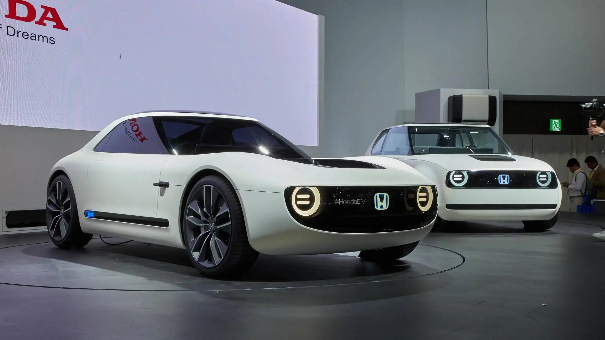
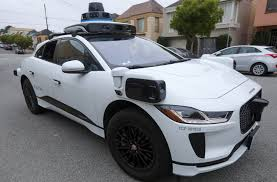
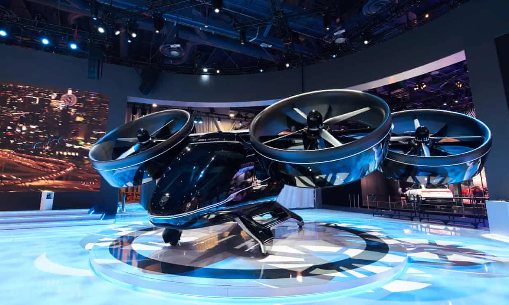
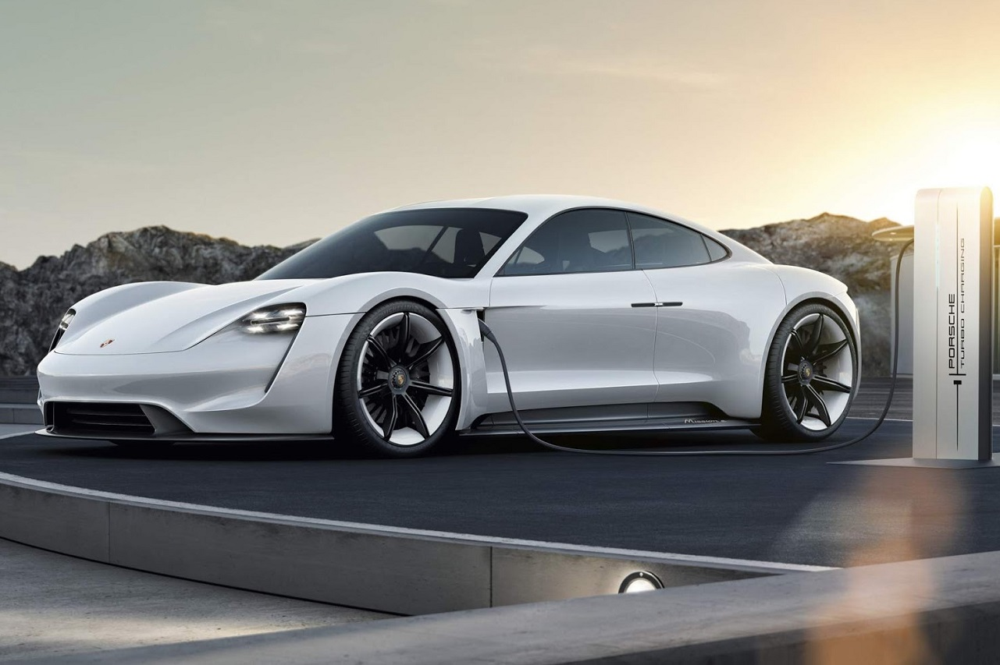

Conceitos futuristas
A Honda apresentou o Sports EV Concept, um veículo elétrico de dois lugares com um design futurista e foco em desempenho e dirigibilidade. O conceito explora a combinação de tecnologia elétrica e esportividade.
Mobilidade autônoma
A Waymo, uma empresa de tecnologia de direção autônoma, está ativamente testando carros autônomos em cidades dos EUA. A tecnologia de direção autônoma promete revolucionar a maneira como nos movemos, com veículos capazes de conduzir sem intervenção humana.
Veículos voadores
A Uber está investindo em veículos voadores, como o Uber Air Taxi, com o objetivo de oferecer transporte aéreo urbano. Esta tecnologia tem o potencial de reduzir o tempo de deslocamento e melhorar a conectividade entre as cidades.
Sustentabilidade e tecnologia
A Porsche Taycan, um carro elétrico de alto desempenho, destaca a crescente importância da sustentabilidade e da tecnologia na indústria automotiva. A tecnologia de baterias e os motores elétricos oferecem uma alternativa ecológica aos veículos a gasolina.
Para saber mais sobre o futuro dos carros acesse mais! Clique aqui! e Boa viagem !: